Kamagaya, Chiba: things to do, food and stays
Kamagaya · Chiba
Kamagaya
Highlighted on the Chiba map.
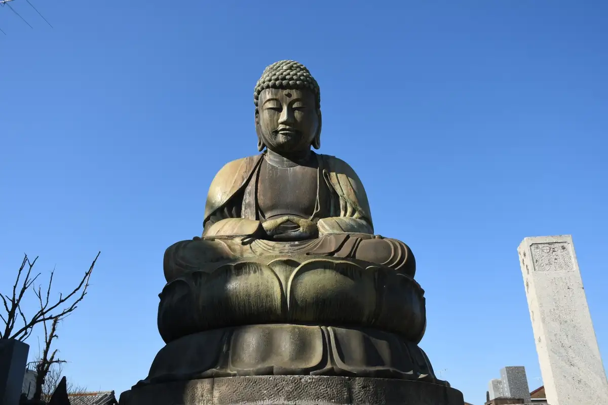
Stay
東横ＩＮＮ千葉新鎌ヶ谷駅前
Toyoko INN Chiba Shin Kama Ke Tanieki Mae
Inn in Shinkamaketani, Kamagaya with breakfast available.
徳寿司旅館
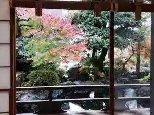
Naruhisa Tsukasa Ryokan
Dining
麺屋 青
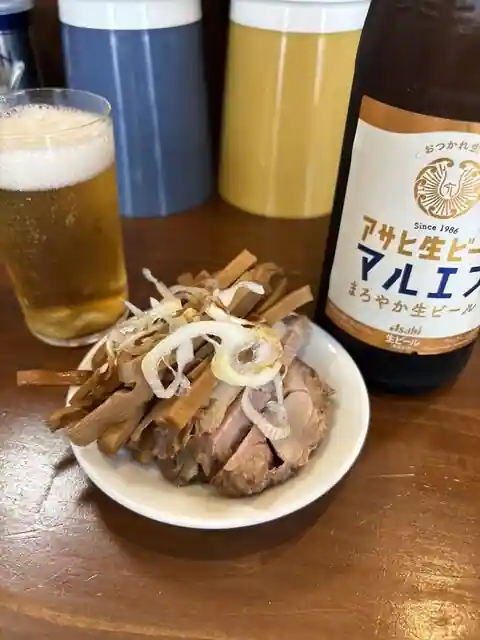
Men Ya Ao
麺や木蓮
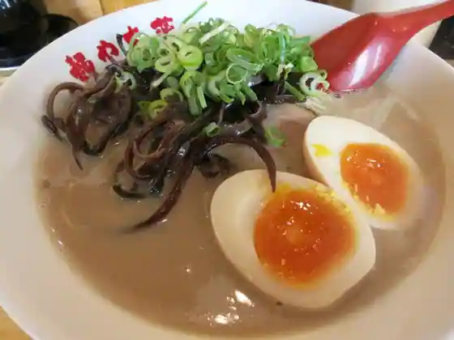
Men Ya Mokuren
鎌ヶ谷 製麺堂てつ
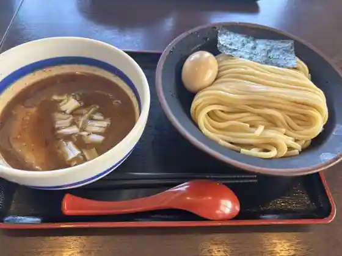
Kama Ke Tani Seimen Do Tetsu
FREEK Hamburger＆others
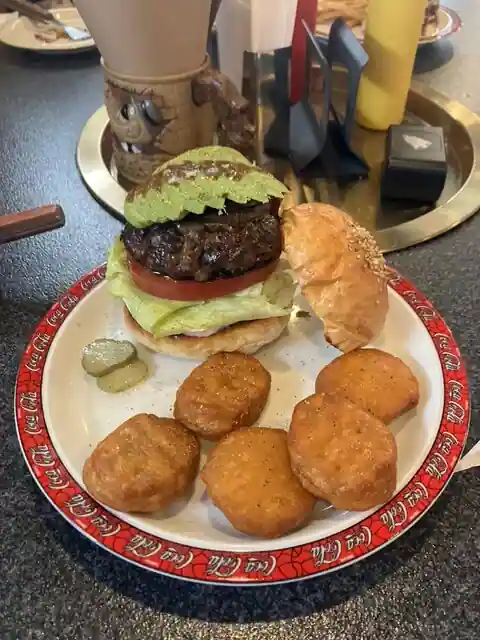
FREEK Hamburger&others
ひさまつ軒
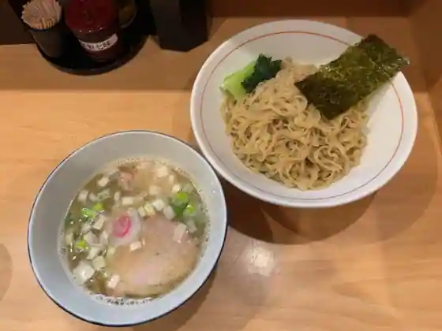
Hisamatsu Ken
13湯麺 集
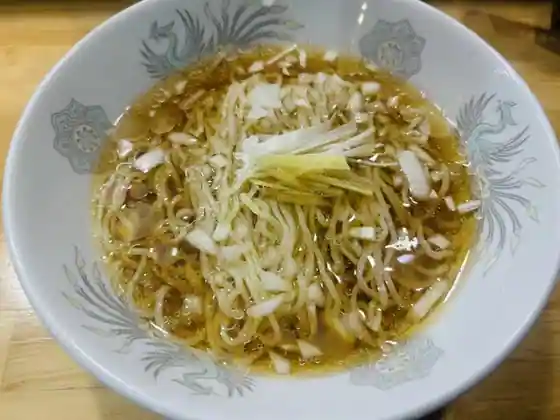
13 Tanmen Shu
いちごやさんのカフェテラス ひらおか
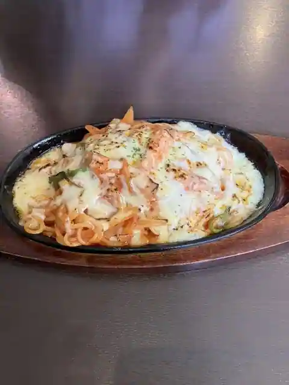
Ichigoyasanno Cafe Terrace Hiraoka
らぁめん もののこころ 新鎌ヶ谷
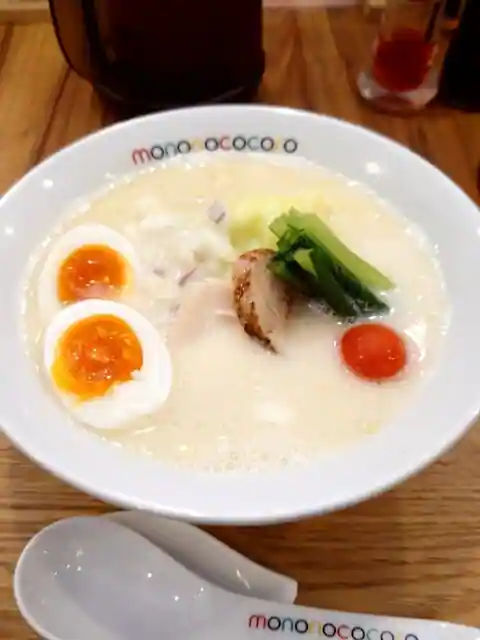
Ramen Mononokokoro Shin Kama Ke Tani
お多福
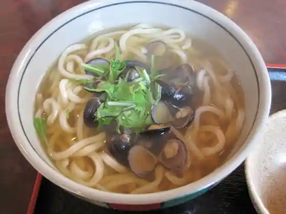
O Tafuku
博士ラーメン＆五つ星ホテル出身のシェフが腕を振るうタイ料理
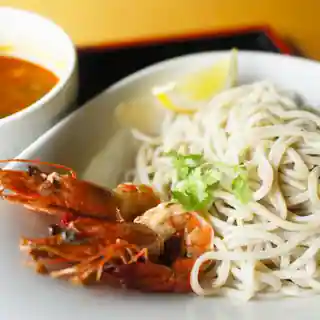
Hakase Ramen & Itsutsu Hoshi Hotel Shusshin No Shiefu Ga Ude Wo Furu U Tai Ryori
白花咲々
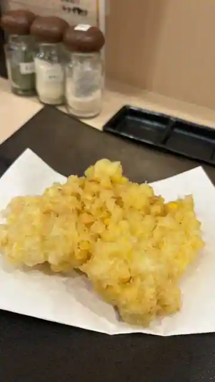
Shirobana Saki (Kurikaesi)
らーめん寺子屋久我
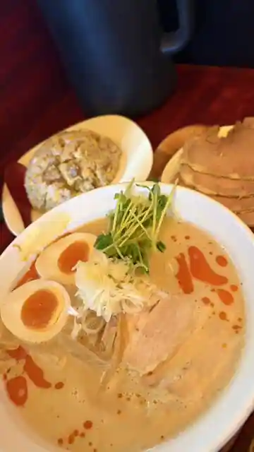
Ramen Terakoya Kuga
くろさわ珈琲店
Kurosawa Coffee
カレー屋けんちゃん
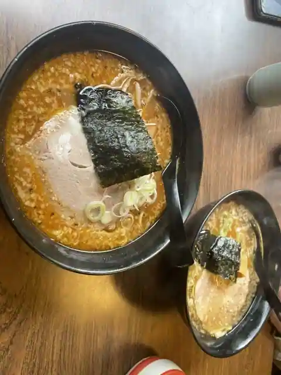
Kare Ya Kenchan
ひろ舞
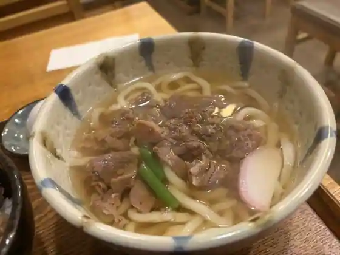
Hiro Mai
RESTAURANT Foody Foody
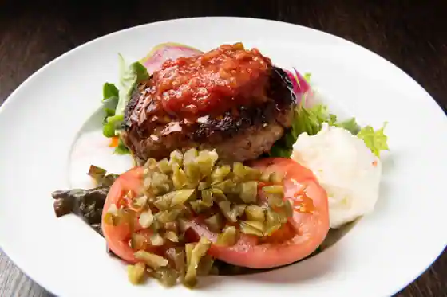
RESTAURANT Foody Foody
キャニス・ミノール
Kyanisu Minoru
すし 旬鮮料理 しゃり膳 新鎌ヶ谷店
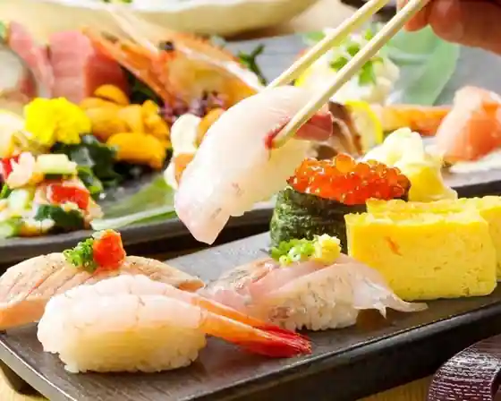
Sushi Jun Sen Ryori Shari Zen Shin Kama Ke Tani
生パスタ専門店 もっちりーの
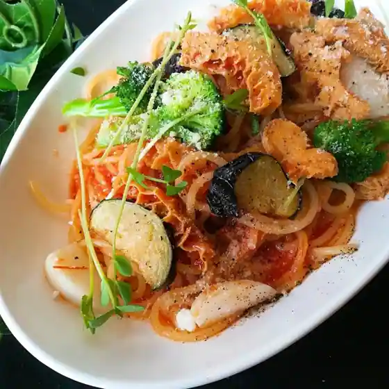
Nama Pasta Senmon Motchirino
ロイヤルベンガル
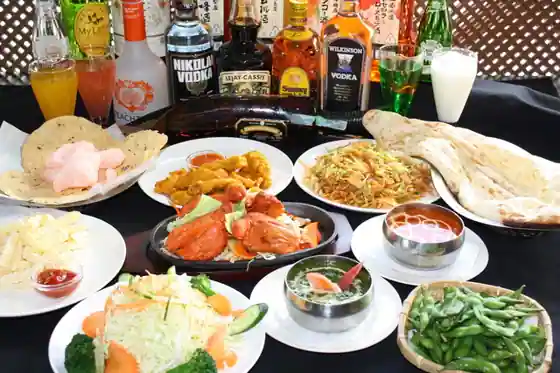
Roiyarubengaru
カナメ
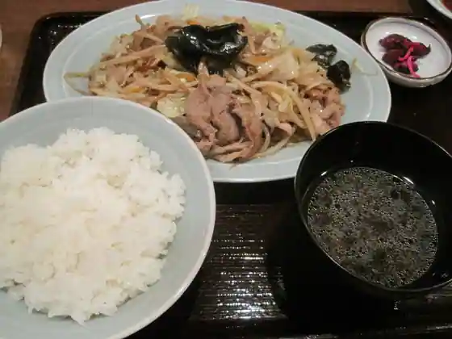
Kaname
焼肉 赤坂
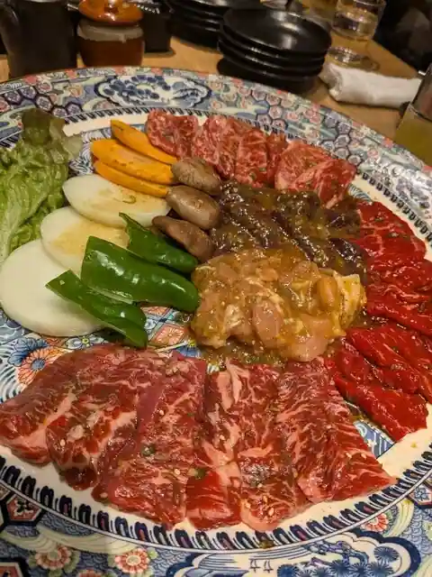
Yakiniku Akasaka
麺 大仏
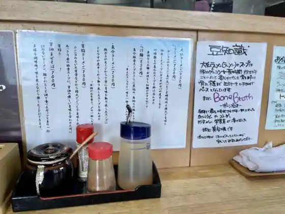
Men Daibutsu
藤川
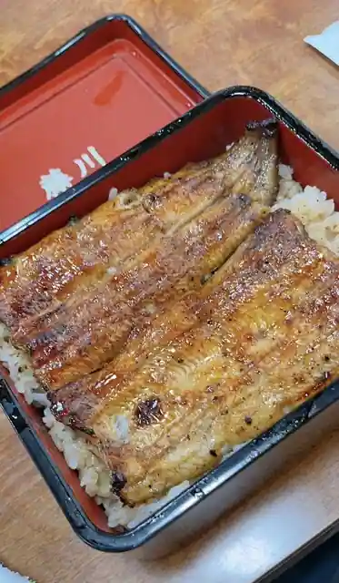
Fujikawa
Sights
Kamagaya Great Buddha
Shisei Memorial Park
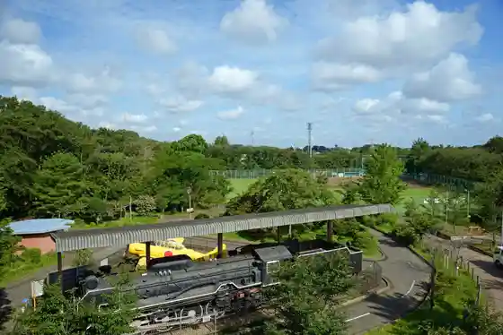
Kai Karayama Park
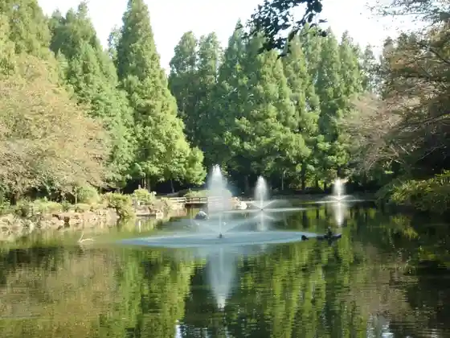
Faitazu Kamagaya Sutajiamu
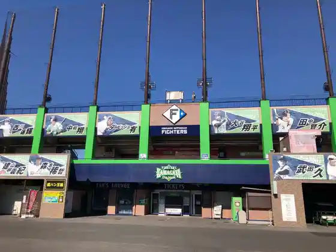
Kokushi Ato Shimosa Kogane Nakano Maki Ato Ho Komi
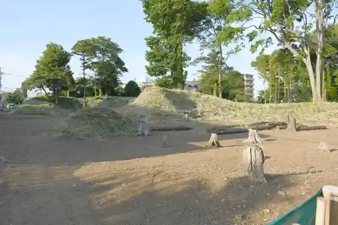